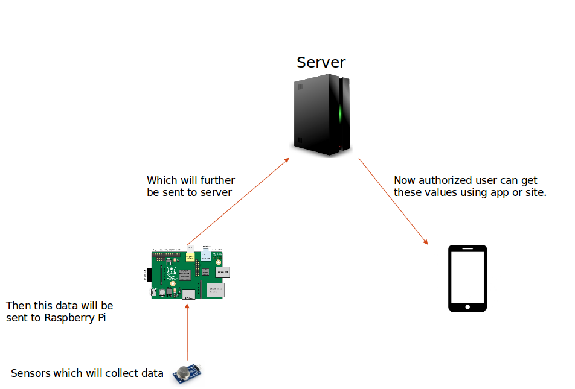
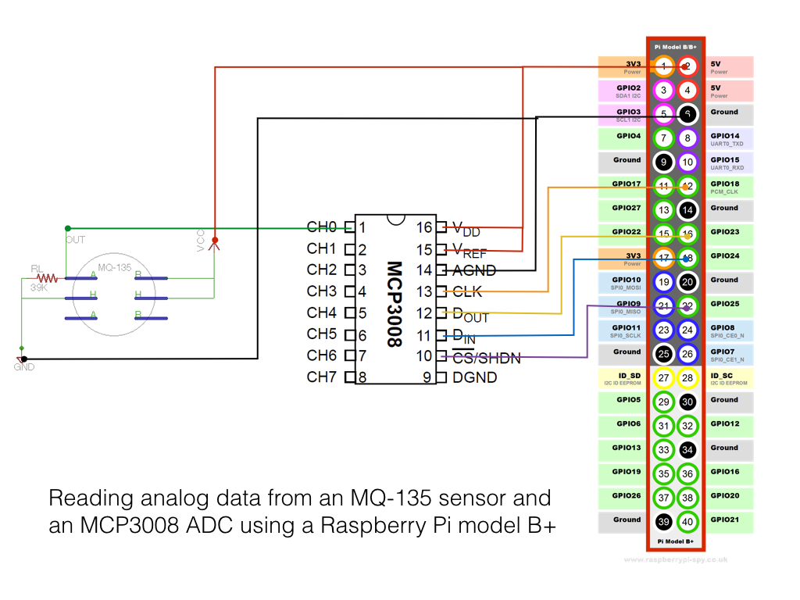
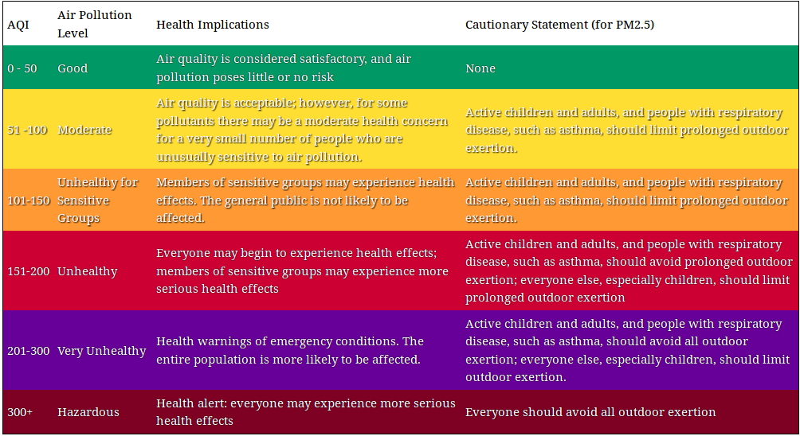

I live in Delhi, which is world's most polluted city. We face several problems related to it in our day to day life. So, basically, we want to design a device, which can help an individual to monitor air quality around them. This project will help people control their environments to a certain extent and increase awareness of the pollution around them. If people are more aware of the contents of the environment, they can change their routines and habits in order to be less affected by air pollution. This can help increase the quality of life and overall health of people at risk. Having the ability to monitor and record air pollution can help shape our daily activities and routines.

A Raspberry Pi is a full fledged computer. It has a real processor, real RAM, real GPU, similar to what smartphones have these days. It comes with a separate distribution of Linux that can run on it as an OS. For our project, we have used raspbian OS, which is quite easy to use. It can run apps, play videos, listen to music on it. It outputs to a monitor and takes input from a mouse and a keyboard. It also provides GPIO pins (General Purpose Input Output) that can take inputs and give outputs, in electrical forms.
We used raspberry pi due to its ease of use. It contained everything which we needed for our project. The coding for controlling GPIO is done in python, which is easy to learn. Also, this was a one-time investment, and raspberry pi can be used in many other experiment projects.
The MQ-135 is a hazardous gas sensor used for air quality control and is suitable for detecting NH3 (Ammonia), NOx, alcohol, Benzene, smoke, CO2, etc. You can see data sheet of MQ135 Sensor here.
MQ 135 sensor produces output in analog form, so there is a need to convert this analog signal to digital signal. For our project, we have used MCP3008 ADC.


As the project have several components, one tech wasn't enough to make this project work. So, we have used many technologies like python for the raspberry pi coding, PHP for server side scripting, java for developing the android application, and DHTML for our website.
I have tried to make the code as readable as possible. I have commentented where ever deemed necessary. But still, if you've any query please feel free to drop a message.
You can fork the code from here.
All the code under this project is licensed under GNU General Public License v3.0. So, you are free to innovate on anything you need. Also, there are certain items like images, logos, etc which are licensed under creative commons license, so please add those attributions where ever needed.